🧠 PNS-腦神經
PNS概覽
- 腦神經(cranial nerve)：12對
- 脊神經(spinal nerve)：31對
- ★[109-1]神經周圍構造：
- 神經內膜(endoneurium)：疏鬆結締組織；包在鞘膜外；由構成鞘膜的許旺細胞分泌
⇒ 包住一條神經纖维(nerve fiber)及 其髓鞘- 神經內膜具網狀纖維，外圍有豐富之微血管網(capillary network)
- 神經束膜(perineurium)：由扁平的神經束膜細胞(perineurial cell)所構成
⇒包住一束神經束(nerve fascicle)- 神經束膜細胞(perineurial cell)間之緊密結合(tight junction)：形成血 –神經屏障
(blood-nerve barrier)
- 神經束膜細胞(perineurial cell)間之緊密結合(tight junction)：形成血 –神經屏障
- 神經外膜(epineurium)：緻密結締組織
⇒包住一整條神經(nerve)
- 神經內膜(endoneurium)：疏鬆結締組織；包在鞘膜外；由構成鞘膜的許旺細胞分泌
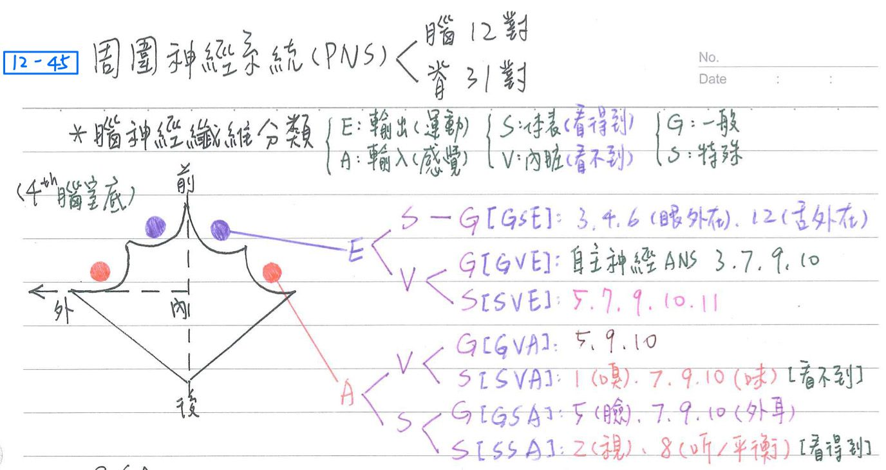
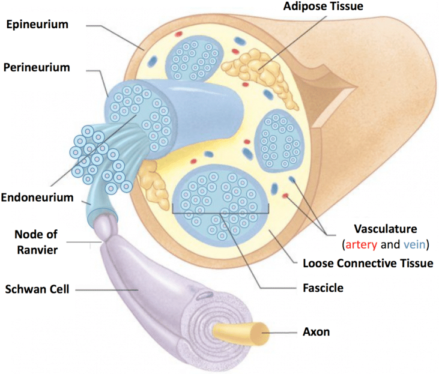
- 傳導方向：
- 輸入神經纖維(Afferent)=感覺神經纖維(sensory)
- 輸出神經纖維(Efferent)=運動神經纖維(motor)
- 支配部位：
- 體表(Somatic)：支配外在軀體者
- 內臓(Visceral):支配內在器者
- 胚胎性質：
- 一般(General)：支配多數一般構造者
- 特殊(Specific)：支配少數特殊構造者
神經纖維分類(7種)
- GSE：一般軀體輸出(身體大部份骨骼肌之運動)→CN3, 4, 6, 12
- GVE：一般内臟輸出(ANS→心肌、平滑肌、腺體)→CN3, 7, 9, 10
- SVE：特殊內臟輸出((由咽弓發展出的)特殊骨骼肌)→★CN5, 7, 9, 10, 11
- ★★[109-1]第一咽弓(CN5-3)：咀嚼肌群+4(下頷舌骨肌、二腹肌前腹、腭帆張肌、鼓膜張肌)
- 第二咽弓(CN7)：顏面表情肌+3(莖突舌骨肌、二腹肌後腹、磴骨肌)
- 第三咽弓(CN9)：莖突咽肌 [莖咽9]
- 第四、六咽弓(CN10)：咽部肌肉、喉部肌肉等
- CN11：胸鎖乳突肌、斜方肌
- GVA：一般內臟感覺(源自內臓的觸、壓、溫、痛；本體感覺及輕觸覺)→CN5, 9, 10
- SVA：特殊內臟感覺(嗅覺、味覺)→CN1；CN7, 9, 10
- GSA：一般軀體感覺(源自體表及肌肉觸、壓、溫、痛；本體感覺及輕觸覺)→CN5, 7, 9, 10
- SSA：特殊軀體感覺(視、聽、平衡)→CN2, 8
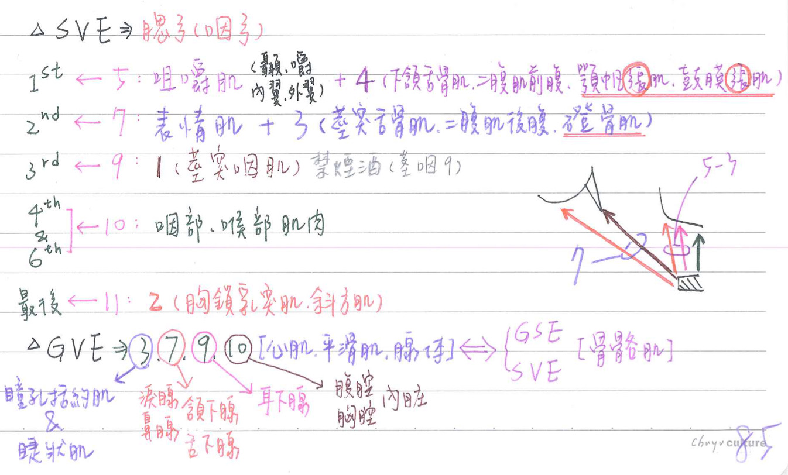
PNS-腦神經(cranial nerve)
- 12對腦神經名稱
順序 名稱 CN I 嗅神經(olfactory) CN II 視神經(optic) CN III 動眼神經(oculomotor) CN IV 滑車神經(trochlear) CN V 三叉神經(trigeminal)
5-1：眼枝(ophthalmic)
5-2：上頷枝(maxillary)
5-3：下領枝(mandibular)CN VI 外旋神經(abducent) CN VII 顏面神經(facial) CN VIII 聽神經(acoustic)
(1) 前庭枝(vestibular)
(2) 耳蝸枝(cochlear)CN IX 舌咽神經(glossopharyngeal) CN X 迷走神經(vagus) CN XI 副神經(accessory) CN XII 舌下神經(hypoglossal)
- [107-1延伸]小腦橋腦角腫瘤 (cerebellopontine angle tumors)/聽神經瘤(acoustic neuroma)：
- tumor壓迫到CP angle→可能影響到CN5、CN7、CN8
腦神經-特性
| 特性 | 腦神經 |
|---|---|
| 純感覺神經(僅含感覺神經纖維) | CN 1,★2,8 |
| 純運動神經(僅含運動神經纖維) | CN 3, 4, 6, 11, 12 |
| 混合神經(含感覺、運動神經纖維) | CN 5, 7, 9, 10 |
| 最大(粗) | CN5 |
| 最小(細) | CN4 |
| 分布最廣 | CN10 |
| 唯一由背側出腦幹 | ★★CN4 |
| 具ANS神經纖維 | CN 3,7,9,10 |
| ★★途經海綿竇內部者 | CN6、內頸V |
| ★★★經海綿竇之外壁(內皮細胞) 與硬腦膜之間 | CN3, 4, 5-1, 5-2 |
| 途經紅核、大腦腳間凹 | CN3 |
| 環繞大腦導水管，途經上髓帆、 兩側中腦下丘之間 | CN4 |
| 自延腦錐體、橄欖體交界處發出 | CN12 |
| 神經纖維不穿出顱腔 | CN8 (內耳在顳骨中) |
| 神經纖維全交叉至對側 | ★CN4 |
| 神經纖維半交叉至對側 | CN2 |
| 由寡突膠細胞形成髓鞘 (其餘由許旺氏細胞形成髓鞘) | CN2 |
| ★★位於小腦橋腦角(CPA)之構造 | CN7, 中間N(CN7分支), CN8, 前下小腦A(AICA) |
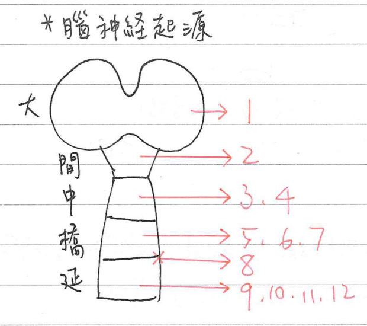
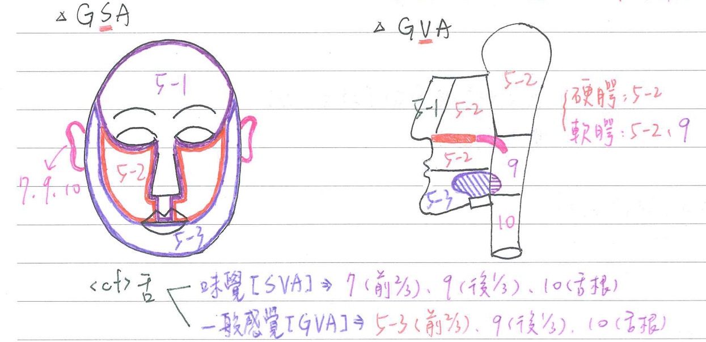
腦神經-起源
| 大腦 | CN1(唯一不經丘腦) |
|---|---|
| 間腦 | CN2 |
| 中腦 | CN3,4 |
| 橋腦 | CN5,6,7 |
| 橋腦/延腦 | CN8 |
| 延腦 | CN9~12 |
腦神經-特殊感覺(SA) [課本內文有誤，圖是對的]
| 嗅覺(SVA) | CN1 |
|---|---|
| 味覺(SVA) | 舌前2/3：CN7 舌後1/3、口咽：CN9 其他(會厭、喉咽、軟顎)：CN10 |
| 視覺(SSA) | CN2 |
| 聽覺(SSA) | CN8(耳蝸支) |
| 平衡(SSA) | CN8(前庭支) |
- ★口咽的味覺是CN9(不是CN10)
腦神經-一般感覺(GA)
| 外耳(GSA) | CN 7,9,10 |
|---|---|
| 臉部(GSA) | 前額(+角膜+鼻部+上眼瞼)：★★★CN5-1 上頷：CN5-2 下頷：CN5-3 |
| 鼻腔(GVA) | 前半：CN5-1(篩N) 後半：CN5-2(蝶顎N) |
| 顎(GVA) | 硬顎：CN5-2(大顎N、鼻顎N) ★軟顎：CN5-2(小顎N)、CN9 |
| 舌(GVA) | 前2/3：CN5-3 後1/3：CN9 |
| 咽(GVA) | 鼻咽：CN5-2 口咽：★★CN9 喉咽：CN10(上喉N-內喉支) |
| 口腔/牙齦/牙齒(GVA) | 上半：CN5-2 下半：CN5-3 |
| 胸/腹腔之內臟(GVA) | CN10 |
腦神經-骨骼肌輸出(GSE、SVE)
- 嘴角歪斜、眼無法閉合：CN7受損
- 眼瞼下垂：CN3受損
- 無法開口、咬合：CN5-3受損
- 伸舌時舌歪斜：同側CN12受損
- 無法臉朝側移、聳壓肩膀：CN11受損
| 眼外在肌(GSE) | 上斜肌：CN4 外直肌：CN6 其他：CN3 |
|---|---|
| 臉部表情肌(SVE) | 提上眼瞼肌：CN3 其他：CN7 |
| 咀嚼肌群(SVE) | CN5-3 |
| ★舌內、外在肌(GSE/SVE) | 腭舌肌：★CN10 其他：CN12 |
| 胸鎖乳突肌、斜方肌(SVE) | CN11 |
| ★莖突咽肌(SVE) | ★CN9 |
| 咽部、喉部肌肉 | CN10 |
| 鼓膜張肌、顎帆張肌 二腹肌(前腹)、下頷舌骨肌 | CN5-3 |
| 磴骨肌、★二腹肌(後腹)、 ★莖突舌骨肌(SVE) | CN7 |
腦神經-內臟輸出(GVE)
| 瞳孔括約肌、睫狀肌 | CN3 |
|---|---|
| 淚腺、鼻腺、腭腺 | CN7 |
| 唾液腺 | 頷下腺：CN7 舌下腺：CN7 耳下腺：CN9 (tip：耳朵的形狀) |
| 胸/腹腔之內臟 | CN10 |
腦神經-腦神經通過之顱骨孔
- CN3、CN4、鼻睫N(CN5-1分枝)：經眶上裂之共同肌腱環
| 嗅神經孔(篩骨) | CN1 |
|---|---|
| 視神經孔(蝶骨) | CN2 |
| 眶上裂孔(蝶骨) | CN3, 4, 5-1, 6 |
| 圓孔(蝶骨) | CN5-2 |
| 卵圓孔(蝶骨) | CN5-3 |
| 內聽孔(顳骨) | CN7, 8 |
| 頸靜脈孔(顳骨/枕骨) | CN9, 10, 11 |
| 舌下神經孔(枕骨) | CN12 |
腦神經-個論
三叉神經(CN5)：★神經核分布於中、橋、延腦
備註
CN5的內容有依據fundamental neuroscience for basic and clinical applications進行修改~
- ★半月神經節(semilunargnglin)：純感覺神經元(V)
- 負責：臉部之觸、壓、溫、痛、輕觸等感覺之第1級神經元(GSA/GVA)
- 不傳遞本體感覺(本體感覺由中腦核負責)
- 三叉神經核：感覺核(GSA/GVA)x3 + 運動核(SVE) x1
- ★三叉N中腦核(mesencephalic nucleus)：頭端
→咀嚼肌本體感覺之第1級神經元，沿★CN5-3傳至三叉N主感覺核、運動核及網狀結構等神經元
- 三叉N主感覺核(main sensory nu.)=★三叉N橋腦核(pontine nu.)：中間
→臉部觸、壓、輕觸、本體感覺之第2級神經元，沿三叉丘腦徑向上傳遞至丘腦(VPM)
- 脊髓核(spinal nucleus)：尾端
→臉部溫、痛感覺之第2級神經元，沿腹側三叉丘腦徑向上傳至丘腦(VPM)- 由上而下再分3部：
- 上部(吻部，pars oralis)
- +中部(極間部，pars interpolaris)
- 下部(尾部，pars caudalis)
第一級 第二級 中樞路徑 ★本體感覺 中腦核 主感覺核(橋腦核) 三叉丘腦徑 觸覺、壓覺、輕觸覺 半月神經節 主感覺核(橋腦核) 三叉丘腦徑 溫度、痛覺 半月神經節 脊髓核 腹側三叉丘腦徑 - 三叉神經部原分佈排列：V1(上)-V2-V3(下) & 鼻尖(前)-臉頰-耳前(後)
- 進入腦幹分佈排列轉位：V1(外)-V2-V3(內) & 鼻尖(上)-臉頰-耳前(下)
- 外耳之一般感覺(GSA)：由CN7, 9, 10傳入三叉脊髓核(最下方)
- 由上而下再分3部：
- 運動核(motor nu.)：支配咀嚼肌群+4(鼓膜張肌、顎帆張肌、二腹肌(前腹)、下頷舌骨肌)等
- ★三叉N中腦核(mesencephalic nucleus)：頭端
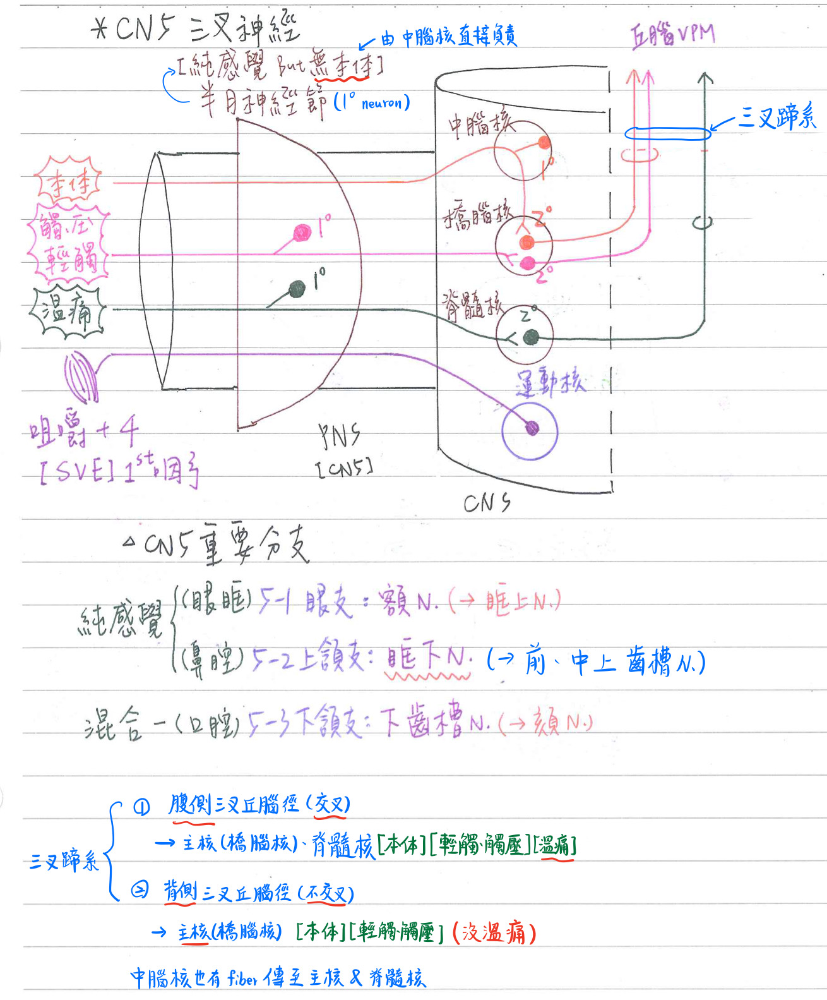
- 三叉N之主要分枝：
- 眼枝(ophthalmic)：CN5-1
- 額N(frontal n. )：支配結膜(conjunctiva)、上眼瞼、頭皮
→眶上N(supra-orbital)、滑車上N(supratrochlear)備註
結膜：覆於鞏膜（眼白）表層。在組織學上屬於複層柱狀上皮，並含有杯狀細胞
- 淚N(lacrimal n.)
- 鼻睫N(nasociliary n.)→
- 前篩N & 後篩N(ant.& post. ethmoidal)、
- 長睫N & 短睫N(long & short ciliary)
- 滑車下N(infratrochlear)
- 額N(frontal n. )：支配結膜(conjunctiva)、上眼瞼、頭皮
- 上頷枝(maxillary)：CN5-2
- 眶下N(infraorbital n.)→前 & 中上齒槽N(ant. & mid. sup. alveolar)
- 後上齒槽N(post. sup. alveolar n)
- 翼顎神經節枝(pterygopalatine ganglionic branch)→
- 後鼻N(post. nasal n)&鼻腭N(nasopalatine)
- 咽N(pharyngeal n)
- 大腭N & 小腭N(greater &lesser palatine n.)
- 顴N(zygomatic n)→顴面N(zygomaticofacial)、顴顳N(zygomaticotemporal)
- 眼枝(ophthalmic)：CN5-1
- 下頷枝(mandibular)：CN5-3
- 下齒槽N(inf. alveolar n)：★★通過下頷孔
→頦N(mental)
- 舌N(lingual n.)：主要支配★舌前2/3之一般感覺
- ★★★舌N也含CN7鼓索枝之神經纖維(司舌前2/3味覺 & 支配頷下腺/舌下腺之副交感節前神經纖維)
- ★舌N末稍環跨頷下腺之主導管
- ★[109-1]頰N(buccal n)：唯一純感覺枝，支配部份臉頰皮膚感覺(含耳下腺開口處口腔黏膜感覺)
- 耳顳N(auriculotemporal n)：★★含CN9副交感纖維；下頷骨髁狀突頸部骨折時易受損
- 骨骼肌神經：嚼肌N、肌N、内翼肌N、外翼肌N、顎帆張肌N、鼓膜張肌N、二腹肌(前腹)N、下頷舌骨肌N
- 下齒槽N(inf. alveolar n)：★★通過下頷孔
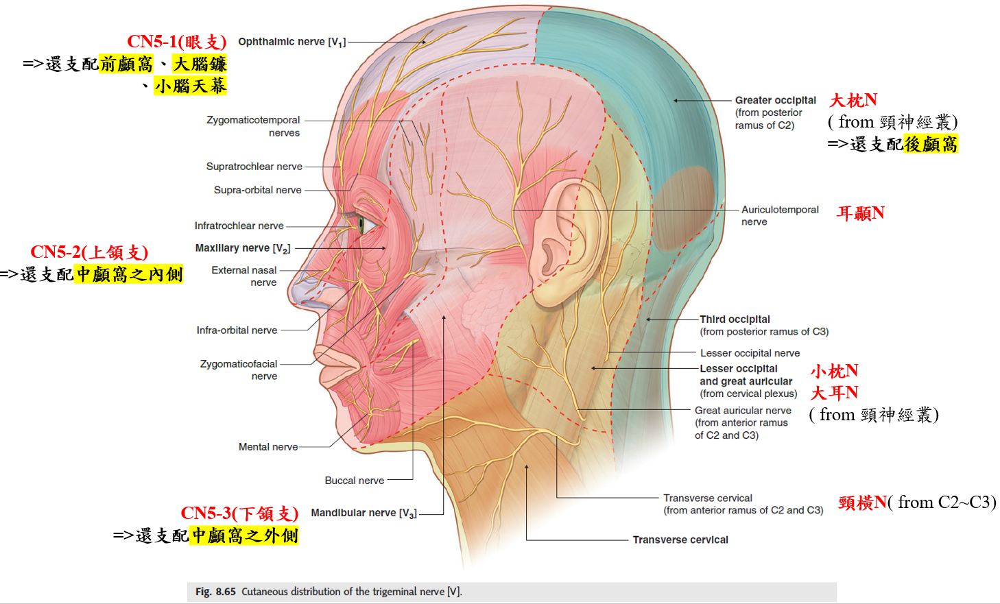
reference：gray’s anatomy for student
顏面神經(CN7) [路徑考很細，圖片要背熟]
- ★★膝狀神經節(geniculate ganglion)：純感覺神經元；位於顳骨岩狀部
→司★舌前2/3之味覺(SVA) & 外耳之一般軀體感覺(GSA)
- ★★[109-2]孤立徑核(solitary tract nu.)：位於橋/延腦交界；純感覺神經元(CN7, 9, 10)；分2組
- 吻端(rostral)：司★[109-2]味覺(SVA)←CN7, 9, 10
- 尾端(caudal)：司★[109-2]一般內臓感覺(GVA)←CN9, 10
- 2根：
- 運動根(motor root)：較大；含運動神經纖維(SVE)
- 感覺&自主根(sensory & autonomous) = 中間N(n. intermedius)：較小
→含味覺(SVA)、一般感覺(GSA)、副交感神經(GVE)之神經纖維
- 顏面神經之主要路徑：
- 顏面神經運動核(★@橋腦)：顏面表情肌、鐙骨肌、二腹肌後腹、莖突舌骨肌(SVE)
- 途經內聽孔、穿越膝狀神經節、經顏面神經管、經★莖乳突孔、★穿越腮腺
- 在顏面神經管(facial canal)中具1分枝(磴骨肌N)→磴骨肌N受損：聽聲音變嘈雜(因為磴骨肌無法正常收縮)
- 離開莖乳突孔(stylomastoid foramen)後具3分枝(耳後N、二腹肌N、莖乳突舌骨肌N)
- 穿越腮腺時具5終末分支：顳N、顴骨N、頰N(★和腮管併行)、下頷緣N、頸N
- 上涎核(sup. salivatory)→(下)頷下神經節：頷下腺、舌下腺(GVE)
- 沿★中間N，經內聽孔、穿越膝狀神經節、經顏面神經管；沿鼓索N(chorda tympani n)，經中耳腔★(鼓室)，自★鎚骨、砧骨之間穿出顳骨，沿舌N(CN5-3分枝)至頷下神經節，再經節後神經纖維至頷下腺、舌下腺
- 淚核(lacrimal)→★★★[108-1]翼腭神經節：淚腺、鼻腺、軟顎的顎腺(palatine gland)(GVE)
- 沿中間N，經內聽孔、穿越膝狀神經節；沿大岩N、★翼管N至★翼腭神經節→
- 額N(5-2)、顴顳N(5-2)、淚N(CN5-1)→★淚腺
- 鼻N(5-2)→鼻腺
- 沿中間N，經內聽孔、穿越膝狀神經節；沿大岩N、★翼管N至★翼腭神經節→
- 孤立徑核(吻端)←膝狀神經節：舌前2/3味覺(SVA)
- 三叉脊髓核←膝狀神經節：外耳之一般感覺(GSA)
- 顏面神經運動核(★@橋腦)：顏面表情肌、鐙骨肌、二腹肌後腹、莖突舌骨肌(SVE)
- 岩神經(petrosal nerve)：
- 大岩N(great petrosal n，CN7分枝)：含淚核之神經纖維(副交感節前)，支配淚腺、鼻腺
- 小岩N(lesser petrosal n，CN9分枝)：含下涎核之神經纖維(副交感節前)，支配耳下腺
- 深岩N(deep petrosal n，內頸A神經叢)：含上頸神經節之神經纖維(交感節後)
- 翼管N(n. of pterygiod canal=Vidian n.)=★大岩N(副交感節前)+深岩N(交感節後)
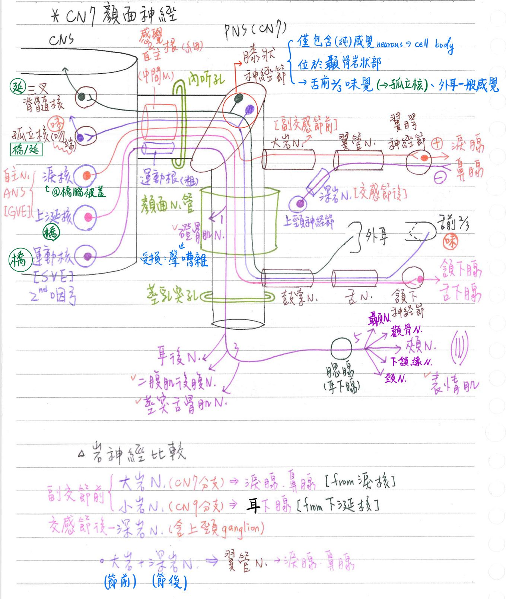
舌咽神經(CN9)
- 疑核(ambiguus nucleus)@延腦：位於孤立徑核之腹側；純運動神經元CN9, 10, 11)；分3組
→主司★咽弓骨骼肌之運動(SVE)- 吻端(rostral)：CN9→★莖突咽肌(第3咽弓)(SVE)
- 中間(middle)：CN10→咽、喉肌肉(第4、6咽弓)(SVE)
- 尾端(caudal)：CN11→胸鎖乳突肌、斜方肌(SVE)
- 舌咽神經之主要路徑：
- 舌咽神經節(glosssopharyngeal ganglion)：純感覺神經元(CN9)
- 上神經節(superior ganglion)：
三叉脊髓核←上神經節：外耳之一般感覺(GSA)
- 下神經節(inferior ganglion)=岩狀神經節(petrosal)：
- 孤立核(吻端)←岩狀神經節：舌後1/3味覺(SVA)
- 孤立核(尾端)←岩狀神經節：口咽、中耳、★頸動脈竇之一般感覺(GVA)
- 上神經節(superior ganglion)：
- ★下涎核(inf. salivatory)→耳神經節：★耳下腺(腮腺)(GVE)
沿鼓室N(tympanic n, CN9分枝)、★小岩N→耳神經節，節後神經纖維再經★耳顳N(CN5-3分枝)至耳下腺備註
是鼓室N不是鼓索N，兩者要分清楚
- 疑核(吻端)：莖突咽肌的運動(第3咽弓)(SVE)
- 舌咽神經節(glosssopharyngeal ganglion)：純感覺神經元(CN9)
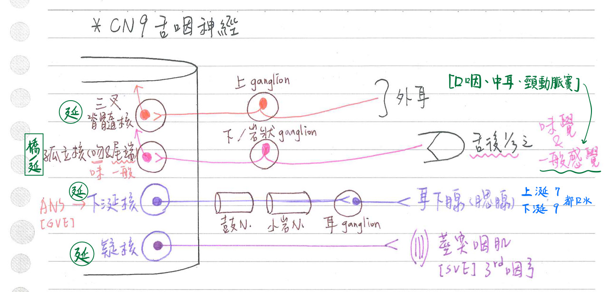
迷走神經(CN10)
- 迷走神經之主要路徑：
- 迷走神經節(vagus ganglion)：純感覺神經元(CN10)
- 上神經節(superior ganglion)=頸靜脈神經節(jugular)：
三叉脊髓核←上神經節：外耳之一般感覺(GSA)
- 下神經節(inferior ganglion)=結狀神經節(nodose)：
- →孤立核(吻端)：會厭、口咽、軟腭之味覺(SVA)
- →孤立核(尾端)：胸腹內臟、主動脈竇之一般感覺(GVA)
- ★頸動脈竇(CN9)、主動脈竇(CN10)：→孤立核(尾端)；與壓力反射有關
- 上神經節(superior ganglion)=頸靜脈神經節(jugular)：
- 迷走神經背核(dorsal nucleus)→自主神經節：胸腹內臓(GVE)
- 疑核(中間)：咽部、喉部肌肉的運動(第4、6咽弓)(SVE)
- 迷走神經節(vagus ganglion)：純感覺神經元(CN10)
- 迷走神經之主要分枝：
- 耳枝(auricular br.)
- 咽枝(pharyngeal br.)
- 上喉N(sup.laryngealn)→
- 外喉N：支配★★環甲肌之運動
- ★內喉N：支配聲帶皺褶以上喉部感覺；和上喉A.(←上甲狀腺A)伴行
- 喉返N(recurrent laryngeal n)
- 右返喉N下降至右鎖骨下A之前方再繞其後方，向上折返
- 左返喉N下降至★主動脈弓(動脈韌帶)之前方再繞其後方，向上折返
- 返喉N：★支配聲帶以下喉部感覺 & 大部份喉之內在肌
- 甲狀腺手術：最易損及★★★喉返N(聲音沙啞)，次易損及上喉N
- 心臓枝(cardiac br.)
- 肺臓枝(pulmonary br.)
- 食道枝(esophagea lbr.)
- 迷走神經幹(vagus trunk)：★★經過鎖骨下A前方
- 左(前)迷走神經幹→前枝(ant.Laterjet) &肝枝(hepaticbr.)
- 右(後)迷走神經幹→後枝(post.Laterjet) & 腹腔枝(celiac br.)
- 左、右迷走N往下走進入腹腔時，會慢慢順時針旋轉(從上方看)，變成★左前右後
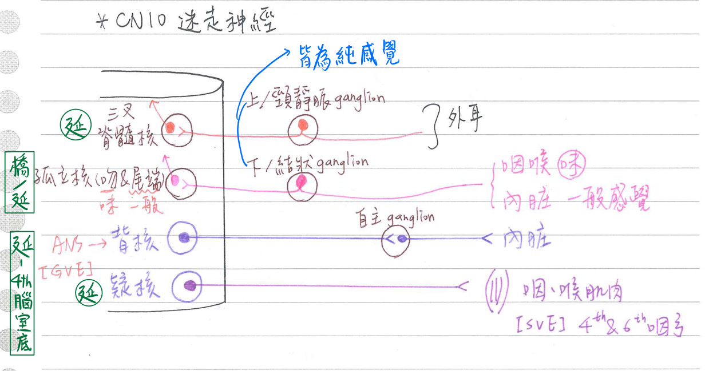
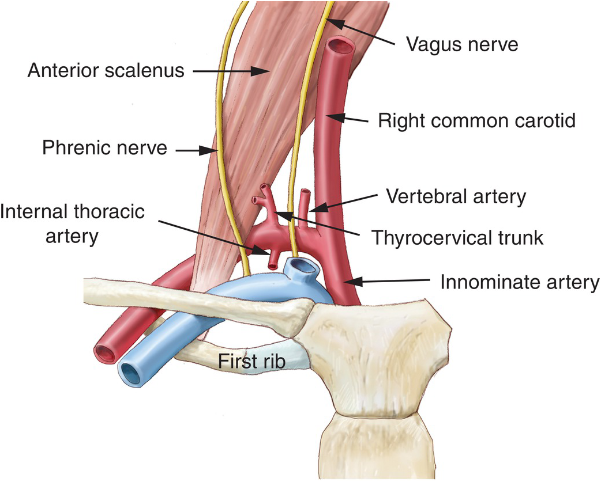
| 腦神經 | 進出顱骨 | 神經纖維種類 | 中樞 (起點or終點) | 周圍 (感覺or運動) | 功能 |
|---|---|---|---|---|---|
| CN1(嗅) | 篩骨水平板 | SVA | 嗅球 | 鼻腔頂部嗅覺上皮 | 嗅覺 |
| CN2(視) | 視神經孔 | SSA | 丘腦(外膝體) | 視網膜(神經節細胞) | 視覺 |
| CN3(動眼) | 眶上裂 | GSE | 動眼神經核 | 動眼N上分支：上直肌、★★提上眼瞼肌 ★[109-1]動眼N下分支：★下/內直肌、下斜肌、副交感節前 | 動眼 提上眼瞼 |
| CN3 | GVE | ★[110-1]E-W核 | ★睫狀神經節→短睫N→★睫狀肌、瞳孔括約肌 | ★★瞳孔變小 水晶體變凸 | |
| CN4(滑車) | 眶上裂 | GSE | 滑車神經核 | 上斜肌 | 動眼 |
| CN5(三叉) | CN5-1：眶上裂 CN5-2：圓孔 CN5-3：卵圓孔 CN5-3(腦膜支)：棘孔 | GSA GVA | 三叉N中腦核 三叉N主核(橋腦核) 三叉N脊髓核 | CN5-1：前額、角膜、鼻黏膜(前) CN5-2：上頷、鼻黏膜(後)、硬腭、鼻咽 CN5-3：下頷、舌(前2/3) | 臉部的一般感覺 |
| CN5 | SVE | 三叉運動核 | 咀嚼肌群(第一咽弓)：CN5-3 ★鼓膜張肌：CN5-3 | 下頷的運動 防音震過大 | |
| CN6(外旋) | 眶上裂 | GSE | 外旋神經核 | 外直肌 | 動眼 |
| CN7(顏面) | 內聽孔(內) 莖突孔(外) | SVA | 孤立徑核 | 膝狀神經節←舌前2/3味蕾 | 味覺 |
| CN7 | GSA | 三叉脊髓核 | 膝狀神經節←外耳 | 一般感覺 | |
| CN7 | GVE | 上涎核 淚核 | 頷下神經節→頷下腺、舌下腺 翼腭神經節→淚腺、鼻腺 | 唾液分泌 ★淚、鼻液分泌 | |
| CN7 | SVE | 顏面運動核 | 顏面表情肌(第二咽弓) 鐙骨肌 | 臉表情運動 防音震過大 | |
| CN8(聽) | 內聽孔 | SSA | 耳蝸神經核 前庭神經核 | 耳蝸神經節←柯氏器官 前庭神經節←壺腹嵴/聽斑 | 聽覺(耳蝸) 平衡(前庭) |
| CN9(舌咽) | 頸靜脈孔 | SVA | 孤立徑核 | 岩狀神經節←舌後1/3味蕾 | 味覺 |
| CN9 | GVA | 孤立徑核 | 軟腭、口咽、舌(後1/3) | 一般感覺 | |
| CN9 | GSA | 三叉脊髓核 | 舌咽上神經節←外耳 | 一般感覺 | |
| CN9 | GVE | 下涎核 | 耳神經節→耳下腺 | 唾液分泌 | |
| CN9 | SVE | 疑核 | 莖突咽肌(第三咽弓) | 咽上提 | |
| CN10(迷走) | 頸靜脈孔 | SVA | 孤立徑核 | 結狀神經節←會厭、口咽、軟顎的味蕾 | 味覺 |
| CN10 | GVA | 孤立徑核 | 喉咽、喉、胸腹腔內臟(橫結腸以上) | 一般感覺 | |
| CN10 | GSA | 三叉脊髓核 | 迷走上神經節←外耳 | 一般感覺 | |
| CN10 | GVE | 迷走神經背核 | 內臟神經節→胸腹腔內臟(橫結腸以上) | 胸腹內臟的運動 | |
| CN10 | SVE | 疑核 | 咽喉肌肉(第四、六咽弓) | 咽、喉運動 | |
| ★CN11(副) | 頸靜脈孔 | SVE | 疑核 | 胸鎖乳突肌 斜方肌 | 轉頭 聳壓肩膀 |
| CN12(舌下) | 舌下神經孔 行經內頸A&外頸A的外側 | GSE | 舌下神經核 | 舌內、外在肌 | 舌運動 |
📖 書本補充：與筆記不同或筆記沒寫到的地方
⚠️
以下為對照書本後整理，筆記原文未更動。標「筆記 vs 書」的是兩邊寫法不同、建議回頭確認的地方。視覺、聽覺平衡、眼球運動、頭部副交感神經節的細節與考題，分別放在視覺、聽覺平衡覺、自律神經系統及眼外肌相關頁面的書本補充。
功能分類與神經核位置（p.469–471）
- 筆記 vs 書：副神經（CN XI）的成分，筆記寫 SVE（來自疑核尾端）；書的功能性成分圖（p.470）與副／舌下神經表（p.510）都把副神經歸為GSE（神經核＝副神經核），舌下神經也是 GSE。不同教科書歸類不同，考試時看選項判斷。
- 筆記 vs 書：嗅覺，筆記歸 SVA；書的嗅及視神經表（p.477）寫SSA，但功能分類表（p.469）又把嗅覺放 SVA，並註明「有些作者把嗅覺歸類在 SSA」。
- 書對「體壁」的定義：皮膚、骨骼肌、骨頭等。GSE＝骨骼肌（咽弓發育而來的除外），SSE 不存在。
- 神經核位置的提示：
- 腦神經的運動核在界溝（sulcus limitans）的腹內側，感覺核在背外側。
- 支配一般骨骼肌的 GSE 神經核（CN III、IV、VI、XII 等）最靠近中線（99-1-6）。
- 動眼、滑車神經核分別在上丘、下丘的正下方。
- 疑核（運動）在孤立核（感覺）的腹側；孤立核是感覺核，不含副交感節前神經元（109-2-17）。
- 小腦橋腦角（CPA）＝小腦與橋腦交界：有 CN VII（含中間神經）、CN VIII；外旋神經不在這裡，它從橋腦與延髓交界處出來（107-1-14）。
咽弓發育而來的肌肉（p.472）
- 第4、6對咽弓（迷走）的肌肉，書上明列：腭咽肌、環甲肌、提腭帆肌、腭舌肌、咽縮肌、喉內在肌。
- 第5對咽弓在發育過程中消失。
- 書的提示：兩條「張肌」（鼓膜張肌、腭帆張肌）都由三叉神經支配；簡單說第4、6對咽弓變成咽和喉的肌肉。
動眼、滑車及外旋神經（p.481–485、516）
- 出腦幹位置：動眼＝大腦腳之間（腳間窩，108-2-14）；滑車＝下丘的尾端（唯一從背面出）；外旋＝橋腦和延髓之間。纖維交叉：只有滑車神經「是」。
- 記憶法：動眼神經上分支支配名稱內有「上」的肌肉（提上瞼肌、上直肌）。
- 書的提示：
- 副交感纖維讓睫狀肌收縮 → 小帶纖維放鬆 → 水晶體前後徑變大 → 看近物（102-1-6、112-1-7 都是考調適）。
- 交感、副交感分別興奮瞳孔擴張肌、括約肌。
- 角膜的感覺回到 V1 的分支鼻睫神經。
- 睫狀長、短神經都含交感（節後）與感覺纖維，但副交感節後纖維只走睫狀短神經（p.516）。
- 臨床推理：動眼神經主幹斷了，交感作用相對增強 → 瞳孔放大（不是縮小，104-2-4）；淚液分泌不受影響，因為淚腺纖維走岩大神經（顏面神經分支）（105-2-7）。上瞼板肌是平滑肌，由交感神經支配（101-2-4）。
三叉神經（p.491–493、527–533）
- 成分：V1、V2 只有 GSA；V3 是 GSA＋SVE，運動纖維只走 V3。三叉神經節內是偽單極神經元。
- 皮膚分布界線：V1＝上眼瞼以上（含鼻樑）；V2＝下眼瞼到上嘴唇（含鼻翼）；V3＝下嘴唇以下。
- V3 的前、後幹（p.527）：
- 前幹細、大部分是運動支（腭帆張肌、鼓膜張肌、咀嚼肌），唯一例外是頰神經（感覺）。
- 後幹粗、大部分是感覺支（耳顳、下齒槽、舌），唯一例外是到下頷舌骨肌的神經（運動）。
- 耳顳神經包住腦膜中動脈，內含耳神經節來的節後副交感纖維。
- 下齒槽神經分出到下頷舌骨肌的神經後進入下頷孔，終支＝頦神經。
- 舌神經含 GSA、GVE、SVA 三種纖維；鼓索神經從後方加入舌神經；下頷下神經節懸吊在舌神經下方。
- V3 的頰神經是感覺神經，別和顏面神經的頰支（支配表情肌）搞混（109-1-6：耳下腺管開口處黏膜痛覺＝V3 頰神經）。
- V2 分支走向（p.531）：鼻腭經蝶腭孔進鼻腔；顴神經內有到淚腺的副交感纖維；眶下神經分出上齒槽中、前支後由眶下孔鑽出；腭大、小神經分別到硬腭和軟腭；上齒槽後神經進入上頷骨後表面。翼管神經＝交感節後＋副交感節前（p.533）。
- 硬腦膜的神經支配（p.419）：前顱窩＝V1（也可能有 V2、V3）；中顱窩內側＝V2、外側＝V3；後顱窩頂部（小腦天幕、大腦鐮後部）＝V1 的天幕神經，底部＝C1、C2（有時 C3）。所以前、中顱窩與小腦天幕都由三叉神經支配（108-1-19）。迷走神經的 GSA 也分布到後顱窩部分硬膜（p.504）。
顏面神經（p.496–499）
- 書的提示：
- 膝狀神經節只放 SVA 和 GSA 的細胞本體，SVE 和 GVE 纖維只是穿過。
- SVE 走運動根；感覺和 GVE 纖維走中間神經（夾在運動根和 CN VIII 之間）。
- CN VII、IX、X 的 GSA 都負責外耳附近皮膚，訊息不進各自的神經核，而是到三叉神經脊髓核。
- 到達頭部的交感纖維全為節後纖維。
- 記憶法：到淚腺的纖維依序經 CN VII → V2 → V1，記成 75251：岩大神經 → 翼管神經 → （翼腭神經節）→ 顴神經（V2）→ 淚神經（V1）。
- 筆記 vs 書：筆記淚核路徑寫「→ 額N（5-2）、顴顳N（5-2）、淚N（CN5-1）→ 淚腺」；書的路徑是顴神經（V2）→ 淚神經（V1），額神經屬 V1、不在這條路上，建議回頭確認。
- 筆記 vs 書：筆記在迷走神經段寫「外耳一般感覺：CN7（鼓索N）」；書上鼓索神經是傳舌前 2/3 味覺及下頷下、舌下腺的副交感纖維，外耳的 GSA 是膝狀神經節細胞負責，表格沒有把它歸給鼓索。
- 五條終末支的作用（圖 119）：顳支＝枕額肌的額肌腹及眼輪匝肌上部；顴支＝眼輪匝肌下部及顴大、小肌；頰支＝頰肌和上唇肌肉；下頷支＝下唇肌肉；頸支＝闊頸肌。
- 顏面神經麻痺合併同側舌前 2/3 味覺喪失 → 損傷在鼓索分出之前（膝狀神經節、中耳鼓室、內聽道）；若在腮腺處受損，鼓索早已分出，不會影響味覺（101-2-1）。
舌咽及迷走神經（p.504–509）
- 兩者都從橄欖背面發出、經頸靜脈孔；感覺神經節都是上、下神經節（偽單極）。
- 舌咽：SVE＝莖突咽肌（第3咽弓）；GVE＝耳下腺（下涎核）；SVA＝舌後 1/3 味覺；GVA＝頸動脈體和竇、咽及中耳；GSA＝外耳附近皮膚。
- 迷走：SVE＝咽、喉及軟腭的肌肉，包括提腭帆肌、腭咽肌；GVE＝最大的副交感神經（迷走神經背運動核）；SVA＝舌根及會厭的味覺；GVA＝咽、喉、胸部及腹部臟器；GSA＝耳殼、外聽道及後顱窩部分硬膜。
- 到腮腺的副交感路徑（圖 121）：舌咽下神經節附近分出鼓室神經 → 鼓室神經叢 → 岩小神經 → 耳神經節 → 耳顳神經 → 腮腺。鼓索神經在耳下腺深層（顳下窩），摘除耳下腺時不會傷到（102-2-12）。
- 喉支（p.508）：
- 喉上 → 喉外（SVE，環甲肌）、喉內（GVA 聲帶以上黏膜感覺＋GVE 黏膜上的腺體）。
- 喉返＝喉下：SVE（除環甲肌外的喉內在肌）＋ GVA（聲帶以下黏膜感覺）；左側繞動脈韌帶、右側繞鎖骨下動脈迴旋。
- 左、右迷走神經幹分別走在食道的前面和後面。
- 右肺尖腫瘤會壓迫右喉返神經 → 聲音嘶啞（102-2-14）。
副與舌下神經（p.510–511）
- 副神經：從橄欖背面發出、經頸靜脈孔；顱根加入迷走神經，脊髓根支配斜方肌和胸鎖乳突肌。
- 舌下神經：從橄欖和錐體之間發出、經舌下神經管；支配舌內、外在肌；並攜帶 C1 的纖維支配頦舌骨肌和甲狀舌骨肌（107-1-3）。
- 書的提示：舌外在肌＝莖舌、舌骨舌、頦舌、腭舌；除腭舌肌由迷走支配外，其他三條都是舌下神經。
- 附在莖突上的三條肌肉：莖突舌骨肌（CN VII）、莖舌肌（CN XII）、莖突咽肌（CN IX）（105-2-9）。
📝 書中歷屆考題（點選答案作答）
99-1-6p.473
下列功能組成 (functional component) 的腦幹神經核中，何者最接近中線？
💡 支配一般骨骼肌（GSE）的神經核（CN III、IV、VI、XI、XII）位在最靠近中線處。
99-2-27p.473
下列關於疑核 (nucleus ambiguus) 的敘述，何者正確？
💡 疑核（運動）在孤立核（感覺）的腹側（界溝內側），支配第3、4及6對咽弓發育來的肌肉。
109-2-17p.473
關於孤立束核 (solitary nucleus) 之敘述，下列何者錯誤？
💡 孤立束核是感覺神經核，不含副交感節前神經元。
106-2-15p.473
下列何構造不位於中腦 (midbrain)？
💡 內側膝狀體屬於丘腦。
107-1-14p.474
下列何構造不位於小腦橋腦角 (cerebellopontine angle)？
💡 中間神經也是 CN VII 的一部分；外旋神經從橋腦和延髓交界處出來。
107-1-36p.474
在中樞神經系統的發育中，下列何者是衍生自基板神經母細胞 (neuroblasts of basal plates)：
💡 基（底）板衍生運動神經元。
107-2-36p.474
腦部發育過程中，下列何者不是衍生自翼板 (alar plate)？
💡 翼板衍生感覺神經元；紅核是運動相關的神經核。
104-1-4p.482
下列何者由腦幹神經核發出後會交叉到對側？
106-2-16p.482
下列何者由腦幹 (brainstem) 背側發出？
111-1-1p.482
下列那一對腦幹神經核，其神經元發出神經纖維後先在腦幹內交叉到對側才離開腦幹？
💡 滑車神經核的纖維從腦幹背面、下丘下方離開腦幹。
101-1-21p.483
第三顱神經受損，最可能影響下列何種動作？
💡 咀嚼＝CN V，臉部流汗＝交感，閉眼＝CN VII。
102-1-6p.483
病人能看清楚遠方物體，卻無法從鏡子中看清自己的臉，下列何者最可能出問題？
💡 看不清鏡中的臉＝看近物有問題，是睫狀肌收縮出了問題。
112-1-7p.483
60 歲以上長者觀看遠物體時視覺功能正常，但閱讀書報卻看不清，最可能是下列何者出問題？
💡 看近物有困難是調適（accommodation）出問題，即副交感支配的水晶體與睫狀肌失去作用。
103-2-10p.483
下列何者的神經元直接支配瞳孔括約肌？
💡 E-W 核發出的是節前纖維，要先和睫狀神經節形成突觸，才間接支配瞳孔括約肌。
109-1-19p.484
控制睫狀肌 (ciliary muscle) 的副交感節前神經纖維 (parasympathetic preganglionic fibers)，通常經由下列何者進入睫狀神經節 (ciliary ganglion)？
110-1-17p.484
關於 Edinger-Westphal nucleus 之敘述，下列何者錯誤？
💡 淚腺是由上涎核轉接顏面神經所支配。
104-2-4p.484
下列何者不是動眼神經損傷之典型臨床症狀？
💡 動眼神經損傷會連帶傷到讓瞳孔縮小的副交感纖維，交感作用相對增強，瞳孔反而放大。
105-2-7p.484
手術時，不慎切斷動眼神經 (oculomotor n.) 主幹，下列何種情形最不可能產生？
💡 負責淚液分泌的纖維走在岩大神經（顏面神經的分支）內。
106-1-16p.484
病患的上眼瞼下垂 (ptosis)，最可能是由於下列何者受損所造成？
101-1-25p.485
下列有關顱神經 (cranial nerve) 的敘述，何者正確？
💡 第1對咽弓衍生的構造由三叉神經支配；滑車神經源自對側神經核，在下丘後方出中腦；提上瞼肌由動眼神經上分支支配。
101-2-4p.485
下列有關眼部肌肉之控制，何者錯誤？
💡 上瞼板肌是平滑肌，由交感纖維支配。
108-2-14p.485
下列何者出現在腦幹的 interpeduncular fossa 中？
💡 腳間窩位在兩個大腦腳之間，CN III 由此鑽出。
107-2-2p.492
有關三叉神經之敘述，下列何者錯誤？
💡 三叉神經所含的運動纖維支配咽弓發育來的肌肉（SVE），不是一般體運動。
100-1-22p.492
下列有關眼眶 (orbit) 之敘述，何者錯誤？
💡 眼眶內還有視神經的感覺纖維。
111-1-7p.492
下列有關眼神經 (ophthalmic nerve) 的描述，何者最不恰當？
💡 屬於特殊感覺神經的是嗅和視神經。
100-2-22p.492
鼻樑 (bridge of nose) 上皮膚之感覺由下列何神經傳導？
107-2-5p.492
鼓膜張肌 (tensor tympani) 由何神經支配？
108-2-16p.492
三叉神經下頷支 (mandibular division of trigeminal nerve) 受損，最可能影響下列何者之收縮？
💡 選項 B–D 由迷走神經支配。
111-1-14p.493
下列何區的一般感覺，是第五對腦神經第三分支 (CN V3) 負責？
💡 硬顎、鼻腔內、下眼瞼都是 V2；口腔內頰的感覺由 V3 的頰神經負責。
109-1-3p.493
下列何者支配第一對咽弓 (pharyngeal arch) 衍生的構造？
109-1-6p.493
耳下腺管 (parotid duct) 開口處口腔黏膜的痛覺，由下列何者傳導？
💡 耳下腺管開口在上排第二顆臼齒對面的黏膜，由頰神經（三叉神經的分支）支配。
104-2-9p.497
下列有關面神經 (facial nerve) 負責傳遞舌前三分之二的味覺之分支的敘述，何者正確？
💡 舌前 2/3 味覺由鼓索神經負責，在主幹穿出莖乳（突）孔前就已分出；鼓索有穿過鼓室但名稱不變，鼓室神經是舌咽神經的分支。
104-2-3p.498
下列何者不由面神經所含之副交感神經纖維支配？
101-2-1p.498
若病人出現周圍型面神經 (facial palsy of peripheral type) 損傷，且合併同側舌頭前三分之二味覺喪失，其損傷部位最不可能在：
💡 腮腺處的損傷不會傷到負責舌前 2/3 味覺的鼓索神經。
107-2-15p.498
關於面神經 (facial nerve) 之敘述，下列何者錯誤？
💡 咀嚼肌的本體感覺由三叉神經的下頷支傳送。
102-1-9p.498
頭部腫瘤造成眼睛、鼻子及口腔乾澀，請問此腫瘤最可能發生於何處？
💡 這些腺體的分泌來自翼管神經的副交感纖維。
106-2-5p.498
翼管神經 (nerve of pterygoid canal) 不包含：
💡 岩小神經鑽出中耳後終止在聽神經節，不參與翼管神經。
108-1-17p.499
刺激淚腺 (lacrimal gland) 分泌的副交感節後神經纖維 (parasympathetic postganglionic fibers) 源自於下列何者？
111-2-9p.499
下列何者不是顏面神經在顳骨區域的分支？
💡 岩小神經走在顳骨岩樣部沒錯，但它是舌咽神經的分支。
113-1-11p.499
下列何者的收縮，是由第七對腦神經 (CN VII) 支配？
💡 嚼肌、內翼肌是咀嚼肌，鼓膜張肌也在中耳內，三者都由三叉神經支配；兩條張肌（鼓膜張肌、腭帆張肌）皆屬三叉神經。
102-2-12p.505
手術摘除耳下腺時，最不可能傷害下列何者？
💡 鼓索神經在耳下腺深層（顳下窩），不會被傷到。
103-1-4p.506
支配耳下腺 (parotid gland) 的副交感神經節前神經細胞體位於：
105-1-11p.506
下列何者不控制附著於舌骨 (hyoid bone) 的肌肉？
💡 舌咽神經支配的莖突咽肌附著在咽壁上。
105-2-10p.506
下列何者攜帶副交感節前神經纖維至耳神經節 (otic ganglion)？
109-1-18p.506
顳頷關節 (temporomandibular joint) 手術後，耳下腺 (parotid gland) 分泌功能降低，下列何者最可能受損？
112-1-12p.506
下列何者由第九對腦神經 (CN IX) 負責？
💡 舌後 1/3 的肌肉由舌下神經支配（問感覺才是舌咽）；耳廓的一般感覺由三叉、顏面及迷走等腦神經（無舌咽）及多條脊神經負責；腭帆張肌由三叉神經支配。
112-2-8p.507
病人主訴聲音嘶啞且口咽部和舌後三分之一的感覺喪失，經檢查發現顱底有一腫瘤。此腫瘤最可能存在下列何處？
💡 聲音嘶啞＝喉返神經（迷走分支）受損；舌後 1/3 感覺＝舌咽神經；兩者都經頸靜脈孔出顱腔。
101-1-19p.508
縱膈手術後，聲音沙啞且聲帶不動，下列何者的分支最可能損傷？
102-2-14p.508
病患右肺尖端有腫瘤，且出現聲音嘶啞的情形，腫瘤最可能已經侵犯下列何者？
💡 右肺尖端已接近頸部，會壓迫右側的喉返神經。
109-1-24p.509
肺癌病患若出現聲帶麻痺，最有可能是影響到那一條神經？
103-1-7p.509
甲狀腺手術後聲音嘶啞 (hoarseness)，下列何者最可能受傷？
105-2-9p.511
3 條附著在莖突 (styloid process) 上的肌肉，受下列六條神經中的那些支配？① CN V3 ② CN VII ③ CN IX ④ CN X ⑤ CN XI ⑥ CN XII
💡 莖突舌骨肌＝顏面神經、莖舌肌＝舌下神經、莖突咽肌＝舌咽神經。
107-1-3p.511
下列何者由源自 C1 的神經透過舌下神經 (CN XII) 來支配？
110-2-18p.511
下列何者不是由舌下神經 (hypoglossal nerve) 支配？
99-2-9p.528
臨床上牙科處理下排臼齒時，局部麻醉下齒槽神經 (inferior alveolar nerve) 多由何處注射局部麻醉藥劑？
108-1-19p.419
下列何者支配前、中顱窩 (anterior and middle cranial fossae) 的硬腦膜 (dura mater) 及小腦天幕 (tentorium cerebelli)？